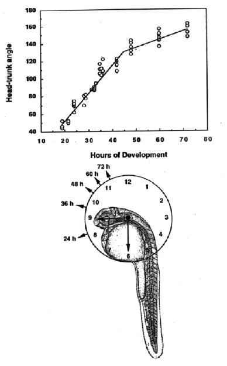

Modified from: Kimmel et al., 1955. Developmental Dynamics 203:253-310. Copyright © 1995 Wiley-Liss, Inc. Reprinted only by permission of Wiley-Liss, a subsidiary of John Wiley & Sons, Inc.
Fig. 33. Head-trunk angle as a function of hours of development (at 28.5C) The head-trunk angle is the angle between a line drawn through the middle of the ear and eye, and a second line parallel the notochord in the midtrunk region (myotomes 5-10). The head-trunk angle increases between 20 h and 70 h, as a consequence of straightening of the embryo. Mentally superimposing the embryo upon a clock face, as shown in the lower drawing, is convenient way to estimate the head-trunk angle. Set the trunk axis t 6 o'clock, and the head axis changes with developmental stage. The head axis of the embryin the drawing (at the prim-17 stage corresponding t31 h) points to about 9 o'clock.

Figure 33